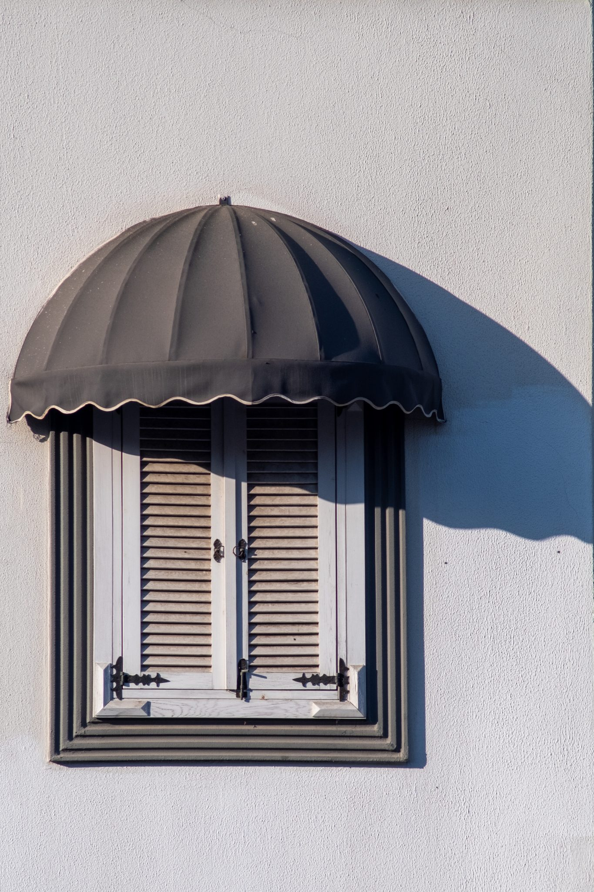
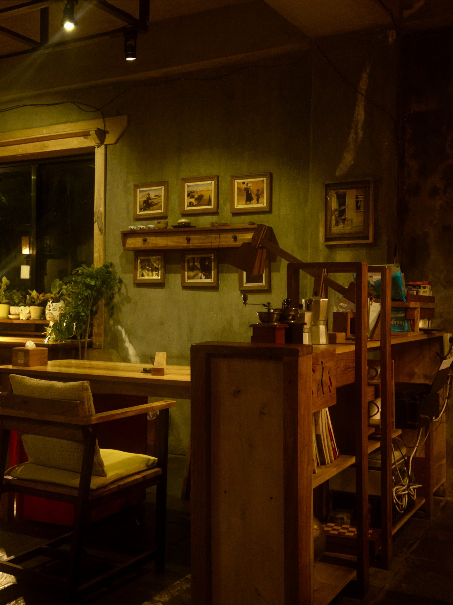
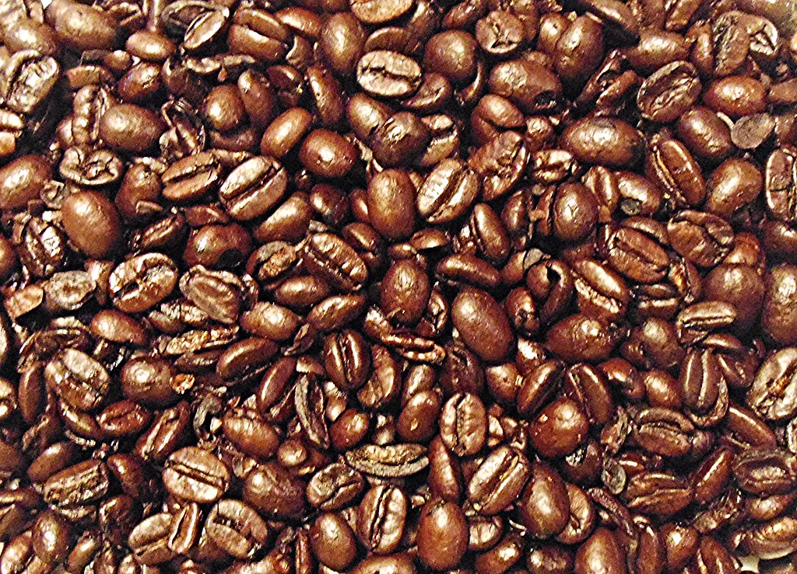

珈琲と、向き合う時間
嘉右衛門町の古民家で、一杯の珈琲とゆっくり向き合う。店の佇まいも、店主との対話も、その時間を形づくる大切な要素です。

店の背景
店があるのは、栃木市嘉右衛門町。蔵の街として知られ、伝統的建造物群保存地区にも指定されている通りの一角です。
もとは古民家だった建物をリノベーションし、小ぶりながら天井の高い、落ち着いた空間に仕立てました。
窓から差し込むやわらかな光、どこかに残る建物本来の木の質感。
華美な装飾を加えず、素材そのものの表情を生かした店内には、茶室にも通じる凛とした空気が流れています。

店主の人柄・接客スタイル
店を構える前、店主は間借り営業やイベント出店を重ねながら、珈琲を淹れていました。
その頃から通ってくださっている常連の方も少なくありません。
この店の接客は、注文を受けるだけのものではありません。
その日の気分や好み、食べたい甘味をひとこと伝えるだけで、店主がそれに合う一杯を提案してくれる。
会話を通じて一杯が決まっていく、対話型の時間です。
カウンター席があり、1人でも入りやすい雰囲気も、この店らしさのひとつ。
珈琲が得意でない方にも、無理のない一杯を提案してもらえます。

豆・淹れ方へのこだわり
珈琲は、インドネシアやブラジルなど、産地の個性がそのまま感じられるシングルオリジンの豆を使用しています。
仕入れの状況により入荷する豆は変動しますので、その時々の豆との出会いも楽しみのひとつです。
淹れ方は、ペーパードリップとネルドリップからお選びいただけます。
煎り具合も深煎り・浅煎りのご希望を伺いながら、その日の気分に合わせたご提案が可能です。
どちらにするか迷ったときは、店主にお任せいただくこともできます。
甘味とのペアリングの考え方
珈琲と甘味は、それぞれの香りや甘み・苦みのバランスを考えながら組み合わせることで、互いの持つ表情がより感じられるようになります。
金柑の外郎巻きや自家製プリンなど、季節や内容によって変わる甘味に対し、どの珈琲が合うかを店主がその場でご提案します。
珈琲単体でも、甘味とあわせても、どちらの楽しみ方でもお選びいただけます。
珈琲と甘味を、味わいに。
産地の個性を味わうシングルオリジンの珈琲と、季節ごとの甘味をご案内します。